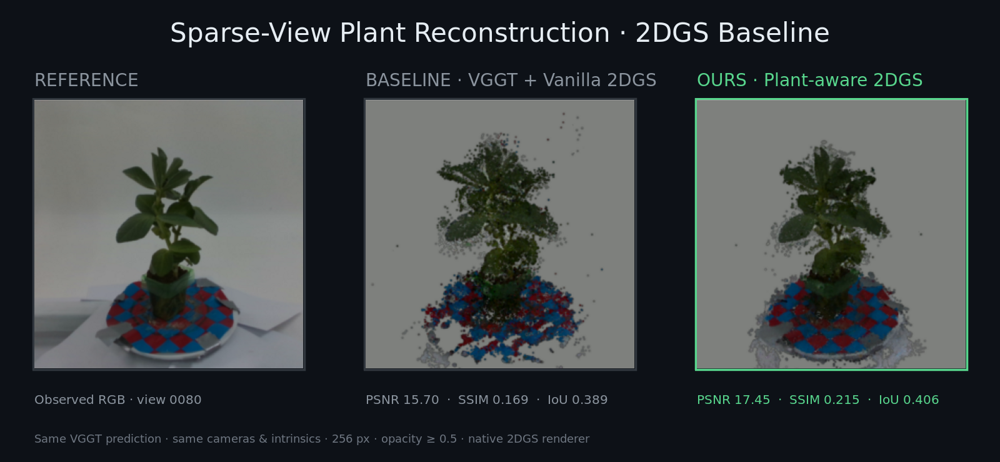
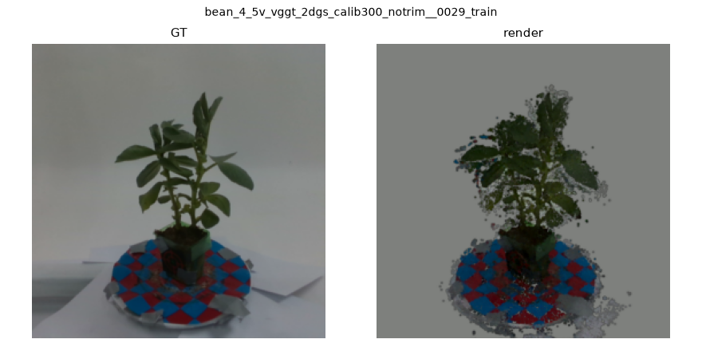
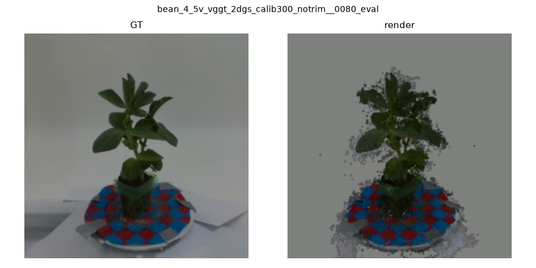
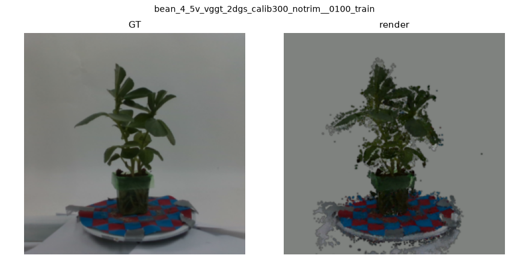
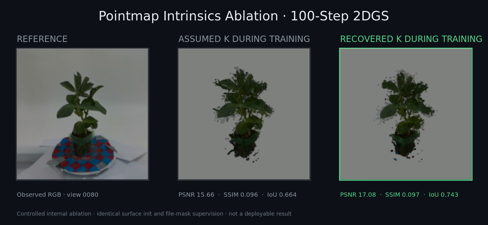
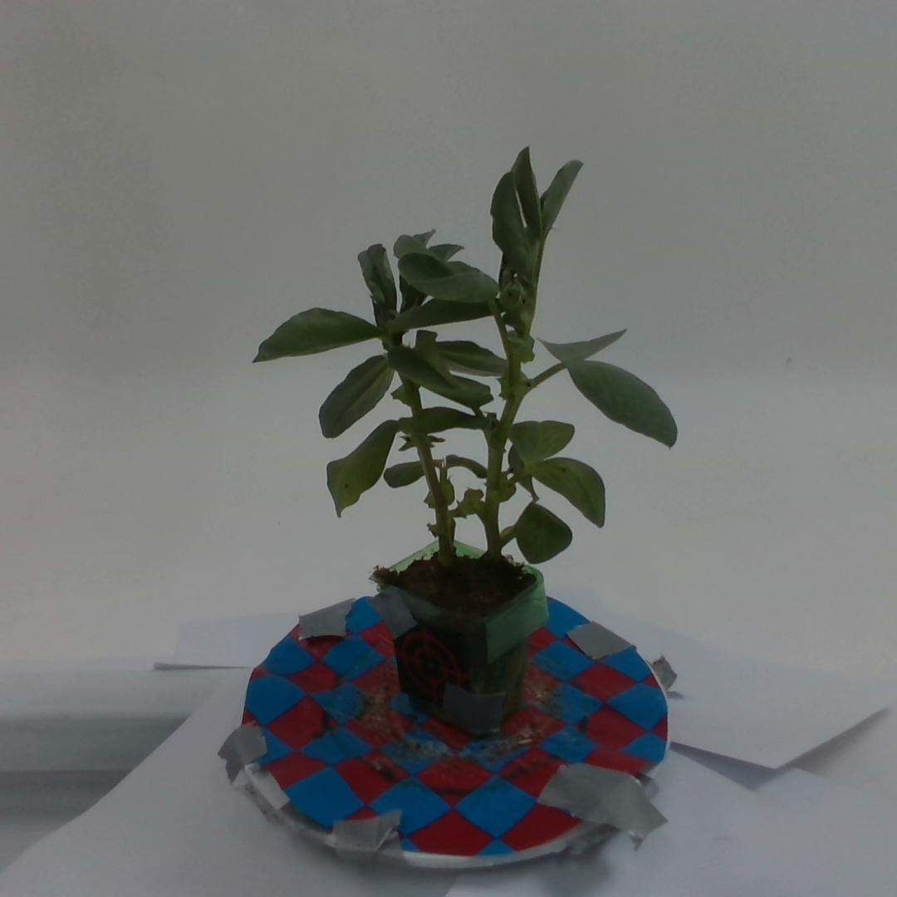
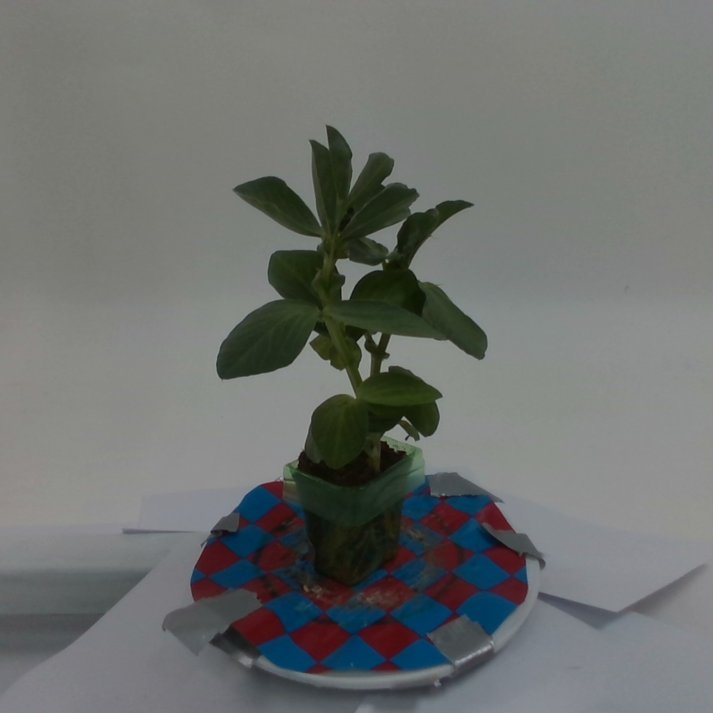
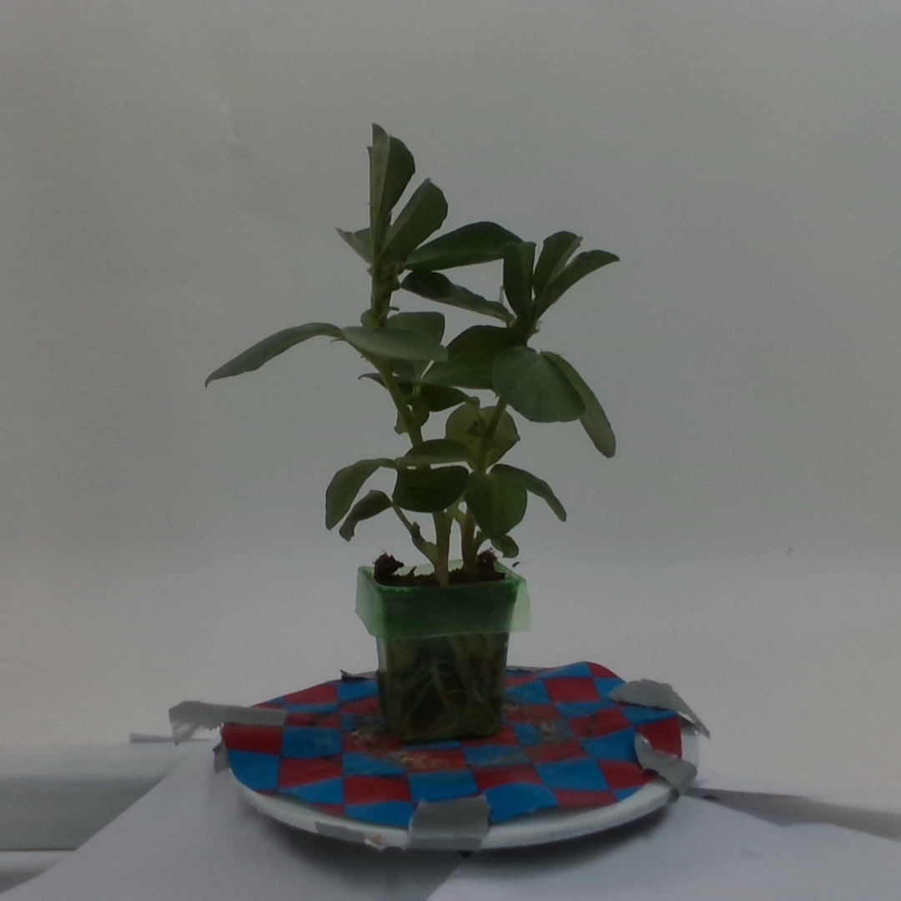
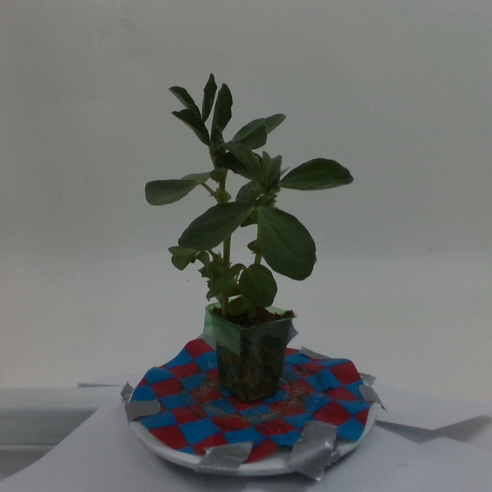
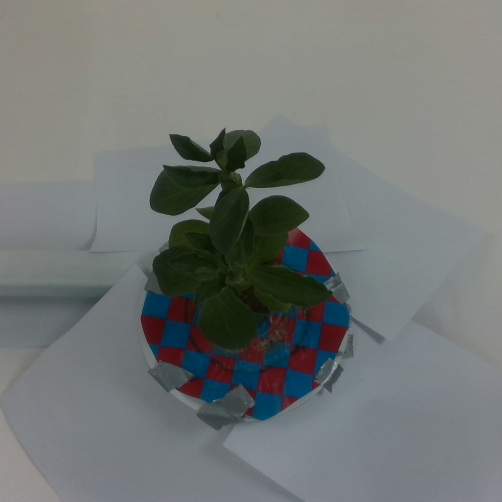

3–6 uncalibrated RGB photos → VGGT geometry → pointmap intrinsics → surface-aligned 2D Gaussian refinement
zero-training
pose-free 3DGS / 2DGSThe Gradio app ships a Live Reconstruction tab only: upload 3–6 photos of one plant (or pick a curated example), optionally enable the BiRefNet background mask, and inspect the reconstructed point cloud and refined 2D Gaussians in the browser.

VGGT predicts cameras, dense pointmaps, color and confidence from uncalibrated photos.
Per-view intrinsics are recovered from pixel/point correspondences.
Pointmap tangents and normals initialize thin 2D surfels.
300-step photometric, alpha, background and distortion optimization.
Input-view rendering metrics on Bean 4 (same VGGT prediction, evaluation cameras, pointmap intrinsics, 256 px resolution, opacity threshold, and native 2DGS renderer):
| PSNR ↑ | SSIM ↑ | Silhouette IoU ↑ | |
|---|---|---|---|
| VGGT + vanilla 2DGS | 15.70 | 0.169 | 0.389 |
| Plant-aware 2DGS (ours) | 17.45 | 0.215 | 0.406 |
| Δ | +1.75 | +0.046 | +0.017 |









This is an input-view rendering comparison, not a held-out novel-view claim. See README.md for installation and demo instructions.
Code: MIT. Third-party model weights (VGGT, BiRefNet) keep their own licenses.